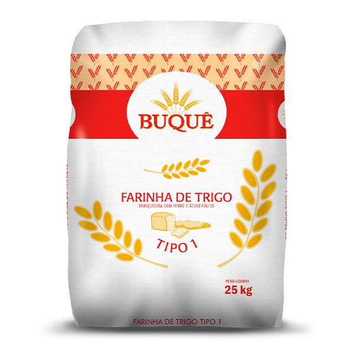
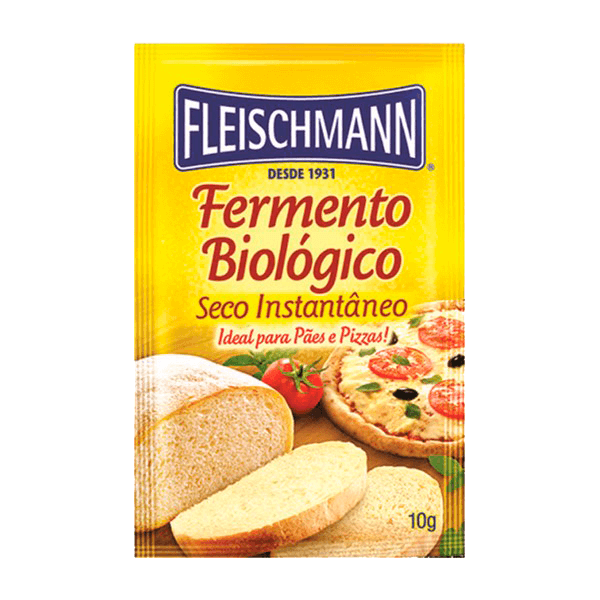

500g de farinha de trigo
1 copo de água
50g de óleo
1 colher de café de sal
1 ovo
25g de fermento
1 colher de sopa de fermento em pó
1- Misture o fermento, o sal e o açúcar em um pouco de água morna, até que o fermento esteja completamente dissolvido.
2- Em seguida, adicione metade da medida de farinha de trigo, o óleo e mexa até criar uma consistência pastosa.
3- Acrescente o restante da farinha de trigo, a pinga, a água morna e misture bem.
4- Assim que a massa desgrudar das mãos, deixe crescer por 30 minutos.
5- Abra os discos, fure a massa com um garfo e pincele o molho.
6- Leve ao forno médio (180° C), preaquecido, por 15 minutos.